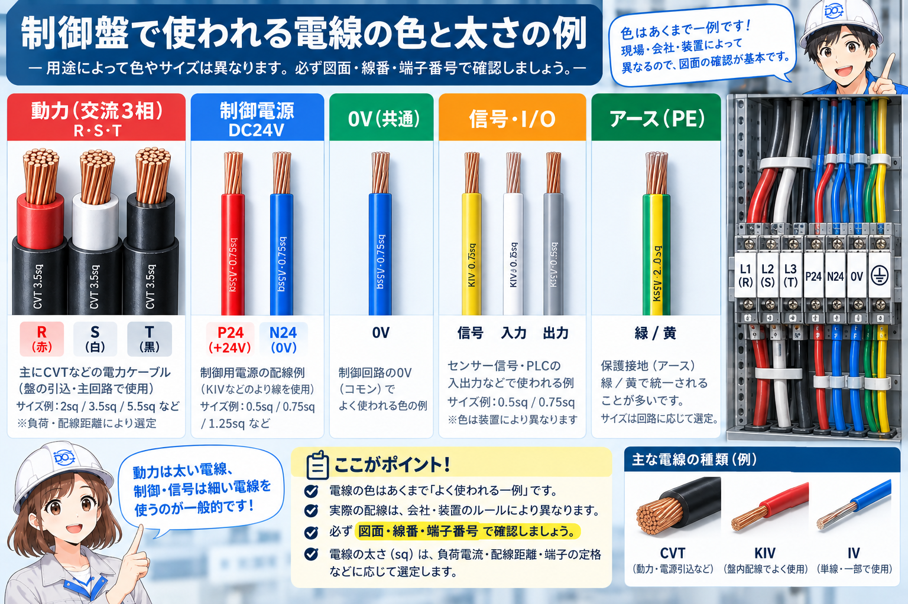
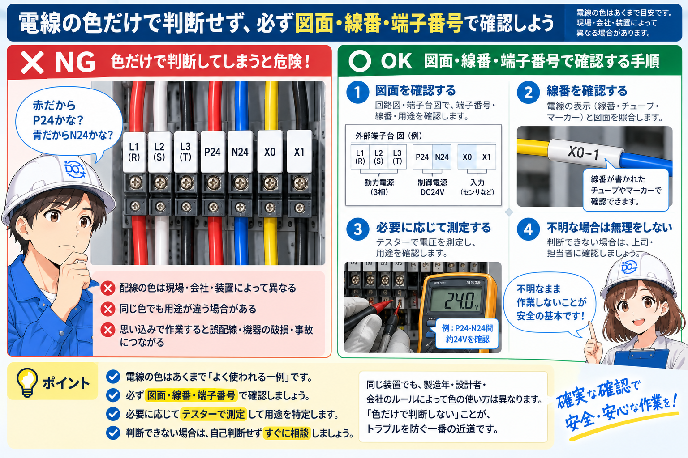
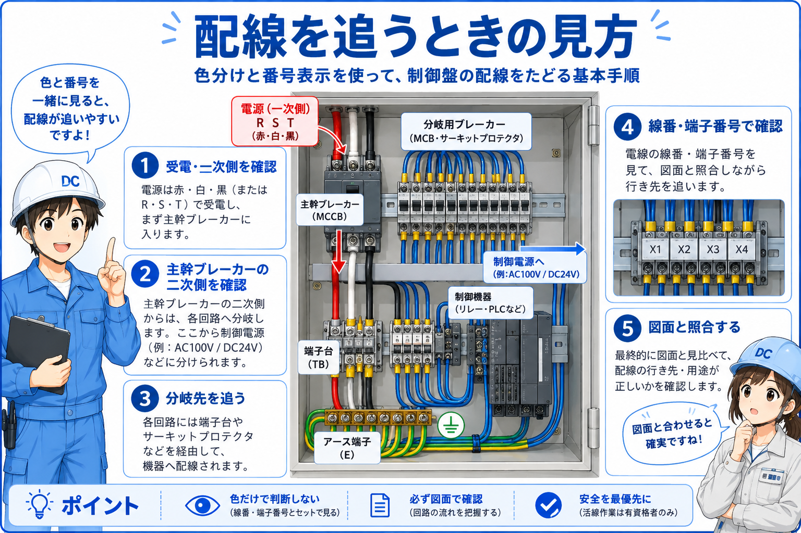

制御盤の配線色・電線色とは
制御盤の配線色・電線色とは、電線の役割を見分けやすくするための色分けです。 電源線、制御線、0V、アース線、信号線などを、色である程度区別できるようにしています。
ただし、色の使い方は会社、装置、設計ルール、メーカー、改造履歴によって変わることがあります。 そのため、色だけで「これは必ず24V」「これは必ず0V」と決めつけるのは危険です。
現場では、色を手がかりにしながら、図面・線番・端子番号・実測を合わせて確認します。 色は便利ですが、最終判断の根拠を色だけにしないことが大切です。
まずはこう覚える
電線色は、配線を追うための「目印」です。ただし、目印であって確定情報ではありません。図面や線番、テスター確認と合わせて判断します。

先輩配線色はかなり便利な手がかりだけど、色だけで断定すると危ないよ。必ず図面や線番と合わせて見るのが基本だね。

後輩色はヒントで、答え合わせは図面や測定でするイメージですね。
配線色の基本構成

よくある考え方として、電源系、0V系、アース系、信号系を色で分けます。 たとえば、緑や緑/黄は接地線として使われることが多く、青や黒、赤、白などは装置ルールに従って使われます。
ただし、どの色を何に使うかは現場によって違います。 同じ色でも、別の装置では違う意味になっていることがあります。 特に古い盤や改造された盤では、色ルールが統一されていないこともあります。
初心者のうちは「色でだいたいの役割を想像し、線番と図面で確認する」と覚えると安全です。
役割の目印
電源、0V、信号、アースなどを見分ける手がかりになります。
図面で確認
色だけでなく、図面の線番や端子番号と合わせて確認します。
必要なら実測
電圧や導通は、必要に応じてテスターで確認します。
なぜ電線を色分けするのか
制御盤の中には多くの電線があります。 すべて同じ色だと、どの線が電源で、どの線が信号で、どの線がアースなのかを見分けにくくなります。
色分けされていると、作業者が回路の種類を大まかに判断しやすくなります。 配線確認、I/Oチェック、改造、トラブル対応のときに、目的の線を探す手がかりになります。
| 見たいもの | 色分けが役立つ理由 | 現場での見方 |
|---|---|---|
| 制御電源 | DC24Vや0Vなどの系統を追いやすい | 電源端子、保護機器、線番、電圧を確認する |
| アース線 | 接地へ向かう線を見つけやすい | 盤本体、接地端子台、機器FG端子を確認する |
| 信号線 | センサーやPLC I/Oの配線を追いやすい | 入力/出力、端子番号、X/Y番号と合わせて見る |
| 改造・点検 | 既存線と追加線の違いに気づきやすい | 色の違和感、線番、図面未反映を確認する |
色分けは作業しやすくするため
電線色は、作業者が配線の役割を見つけやすくするための工夫です。色だけで判断せず、図面や線番と合わせることで安全に確認できます。
色だけで判断する場合と、図面で照合する場合

色だけで判断すると、現場ルールの違いや改造履歴を見落とす可能性があります。 たとえば、過去の改造で違う色の線が使われていたり、同じ色でも別回路として使われていたりすることがあります。
図面で照合する場合は、線番、端子番号、機器名、電源系統を合わせて確認できます。 さらに必要に応じてテスターで電圧や導通を確認すれば、判断の精度が上がります。
| 確認方法 | メリット | 注意点 |
|---|---|---|
| 色だけで見る | 早く大まかな見当を付けられる | 装置ルールや改造で意味が変わるため、断定は危険 |
| 図面と照合する | 線番、端子番号、機器名まで確認できる | 図面が最新かどうかも確認する必要がある |
| 実測する | 電圧や導通を実際に確認できる | 測定レンジ、測定箇所、安全確認に注意する |
色だけで触らない
「この色だから安全」「この色だから0V」と決めつけて触るのは危険です。作業前には図面確認、電源状態の確認、必要な測定を行います。
配線色を手がかりに確認する流れ

まず、電線色で大まかな役割を見ます。 アース系なのか、制御電源系なのか、信号線なのか、見た目から仮説を立てます。
次に、線番と図面を確認します。 図面上の線番、端子番号、機器名と実物が合っているかを照合します。 最後に、必要であればテスターで電圧や導通を確認します。
1. 色で見当を付ける
電源系、0V系、信号系、アース系などの可能性を考えます。
2. 線番を見る
マークチューブや線番を確認し、対象線を特定します。
3. 図面と照合する
端子番号、機器名、電源系統、I/O番号を確認します。
4. 必要なら測定
電圧や導通をテスターで確認し、思い込みを避けます。
先輩色は入口としては便利。でも最後は線番、図面、測定で確認する。これを習慣にすると、思い込みのミスを減らせるよ。
後輩色は最初のヒントで、確認は線番と図面、必要ならテスターですね。
現場で見るときのポイント
現場で配線色を見るときは、まずその盤のルールを確認します。 図面の凡例や注記、盤内の既存配線の傾向を見ると、色分けの考え方が分かることがあります。
次に、改造跡に注意します。 追加工事や応急処置で、元の色ルールと違う電線が使われていることがあります。 色だけを信じず、線番や端子番号も確認します。
また、アース線や高い電圧がかかる可能性のある線は、特に慎重に扱います。 見た目だけで安全と判断せず、作業前の電源確認や測定を行います。
ここを覚える
制御盤の配線色は、現場を見るための便利なヒントです。ただし、色は現場ルールや改造で変わることがあるため、最終判断は図面・線番・測定で行います。
盤内ルール
その装置でどの色が何に使われているか、図面や既存配線を見ます。
線番との一致
色だけでなく、線番・端子番号・図面の内容を照合します。
改造跡
追加線や応急配線で、色ルールが崩れていないか確認します。
安全確認
触る前に電源状態、電圧、作業範囲を確認します。
まとめ：配線色は便利な目印だが、色だけで断定しない
制御盤の配線色・電線色は、回路の種類や役割を見分けるための手がかりです。 電源線、0V、信号線、アース線などを大まかに把握する助けになります。
ただし、色のルールは現場や装置によって違います。 改造や古い盤では、色と役割が一致しない場合もあります。 そのため、図面、線番、端子番号、必要な測定を合わせて確認することが大切です。
この記事の結論
配線色は、制御盤の配線を追うための大切な目印です。ただし、色だけで判断せず、図面・線番・端子番号・実測を組み合わせて確認しましょう。